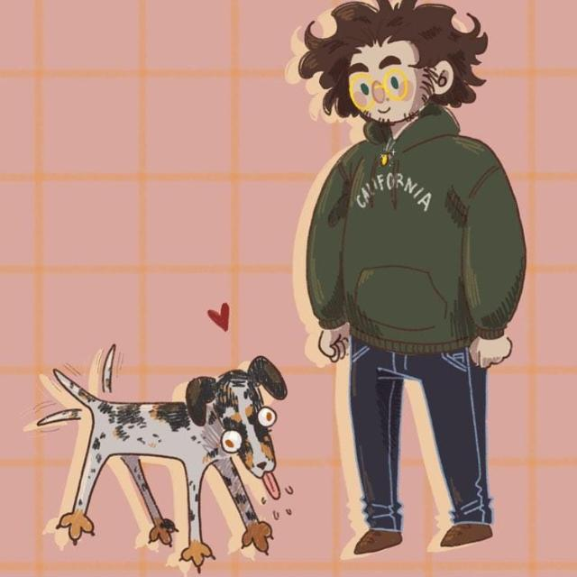

Bonjour, je suis Ulysse — ingénieur SI en alternance !
Étudiant ingénieur à l'EPISEN, spécialité Systèmes d'Information, orienté
cybersécurité, administration système & réseau et cloud. Maître du jeu la nuit et
de Bosco

à tout moment. Bienvenue ! Visitez les lieux et
contactez-moi
pour plus d'infos.
- Linux / Windows Server
- Proxmox / VMware
- Azure (AZ-900 / AZ-104 en cours)
- Ansible / Bash / Python
- Docker / CI-CD GitLab
- Grafana / Monitoring
- DNS, DHCP, VPN, VLAN
- Certification CCST (Cisco)
- LPIC-1 en cours